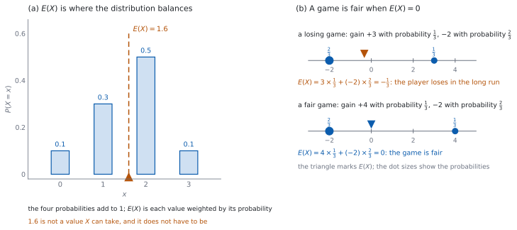

SL 4.7 — Discrete random variables and expected value（離散確率変数と期待値）
- discrete random variable（離散確率変数）\(X\) が何を表すかを述べ、とりうる値をすべて書き出せる。
- probability distribution（確率分布）を表で書き、読める。
- 確率の合計が \(1\) であることを使って、未知の確率を求められる。
- \(P(X \ge 3)\) のような確率を、表から選んで足して求められる。
- 分布が式で与えられたとき、定数を求め、表を作れる。
- expected value（期待値）\(E(X) = \sum x_i P(X = x_i)\) を計算できる。
- \(E(X)\) の意味を、長い目で見た平均として説明できる。
- fair game（公平なゲーム）を \(E(X) = 0\) で判定できる。
The idea
1. random variable とは
discrete random variable（離散確率変数）\(X\) は、試行の結果に数を割りあてるしくみです。
- さいころを \(1\) 回投げて、出た目を \(X\) とする。\(X\) は \(1, 2, \ldots, 6\) のどれか。
- コインを \(3\) 回投げて、表の回数を \(X\) とする。\(X\) は \(0, 1, 2, 3\) のどれか。
「離散」は、とりうる値がとびとびであることです。 数えられる値だけを取ります。
大文字と小文字を使い分けます。 \(X\) は変数そのもの、\(x\) はその値です。\(P(X = x)\) は「\(X\) が値 \(x\) になる確率」です。
2. probability distribution（確率分布）
probability distribution（確率分布）は、とりうる値とその確率の対応です。表で書くのがふつうです。
| \(x\) | \(x_1\) | \(x_2\) | \(\cdots\) | \(x_k\) |
|---|---|---|---|---|
| \(P(X = x)\) | \(p_1\) | \(p_2\) | \(\cdots\) | \(p_k\) |
表の下の段に並ぶのは確率です。 度数ではありません。
とりうる値をすべて書きます。 書きもらすと、合計が \(1\) になりません。
3. 確率の合計は \(1\)
とりうる値は、すき間なく全部を分けています。だから
\[ \sum_{i=1}^{k} P(X = x_i) = 1 \tag{1}\]
未知の確率は、これで求まります。 表に \(1\) つだけ空きがあれば、\(1\) から残りを引くだけです。
どの確率も \(0\) 以上 \(1\) 以下です。 求めた値が負になったら、どこかがまちがっています。
「\(X\) が \(3\) 以上」のような確率は、あてはまる確率を足します。 表の中から選んで足すだけです。
4. 式で与えられる場合
分布は、表ではなく式で与えられることもあります。たとえば
\[ P(X = x) = k(5 - x), \qquad x \in \{1, 2, 3\} \]
のような形です。
まず \(k\) を求めます。 すべての \(x\) について \(P(X = x)\) を書き出し、合計を \(1\) とおきます（式 1）。上の例なら \(4k\)、\(3k\)、\(2k\) の合計を \(1\) とおきます。
次に表を作ります。 表にしてしまえば、あとは第 \(2\) 節・第 \(5\) 節と同じです。
とりうる値の範囲を見落とさないでください。 \(x \in \{1, 2, 3\}\) と書いてあれば、\(x = 0\) や \(x = 4\) は入りません。
5. expected value（期待値）
expected value（期待値）\(E(X)\) は、値を確率で重みづけした平均です。
\[ E(X) = \sum_{i=1}^{k} x_i P(X = x_i) \tag{2}\]
\(E(X) = \displaystyle\sum_{i=1}^{k} x_i P(X = x_i)\) は、公式集の 4.7 の欄に Expected value of a discrete random variable \(X\) として載っています。試験中に配られるので、覚える必要はありません。
覚えるのは、かける相手のほうです。 値 \(x_i\) に、その値の確率をかけます。確率どうしを足すのではありません。
表の \(2\) 段をかけて、足すだけです。 縦にかけて、横に足す、と覚えると速いです。
\(E(X)\) は「つり合う点」です（図 1 (a)）。棒グラフを板に載せたとき、支点になる位置です。
6. \(E(X)\) の意味
\(E(X)\) は、同じことを何回もくり返したときの \(1\) 回あたりの平均です。 \(1\) 回の結果の予想ではありません。
\(E(X)\) は、\(X\) がとれない値になってもかまいません。 \(X\) が整数しかとらなくても、\(E(X)\) は \(2.4\) のような小数になりえます。
\(n\) 回くり返したときの合計の予想は \(n \times E(X)\) です。 これは SL 4.5 の期待される回数と同じ考え方です。
単位を落とさないでください。 \(X\) が円なら \(E(X)\) も円、\(X\) が人数なら \(E(X)\) も人数です。
7. fair game（公平なゲーム）
\(X\) を「プレイヤーの利得」とすると、\(E(X) = 0\) のゲームを fair（公平）といいます（図 1 (b)）。
利得は、受け取る額から払う額を引いたものです。 参加料を引き忘れるのが、いちばん多い誤りです。
- \(E(X) > 0\) なら、長い目で見てプレイヤーの得です。
- \(E(X) = 0\) なら、長い目で見てどちらの得にもなりません。
- \(E(X) < 0\) なら、長い目で見てプレイヤーの損です。
「公平」は \(1\) 回ごとの話ではありません。 \(E(X) = 0\) でも、\(1\) 回では勝つことも負けることもあります。
このページの計算は、Paper 1 でも Paper 2 でも手でできます。かけて足すだけです。
答えは分数のままで書けます。 \(\dfrac{45}{20}\) は \(\dfrac{9}{4}\) まで約分します。

Why it works
なぜ、値に確率をかけて足すのでしょうか。 度数で考えると分かります。
同じ試行を \(N\) 回くり返したとします。値 \(x_i\) が出る回数は、およそ \(N \times P(X = x_i)\) 回です。すると、\(N\) 回ぶんの合計はおよそ
\[ \sum_{i=1}^{k} x_i \times N \, P(X = x_i) \]
です。\(1\) 回あたりの平均を出すために \(N\) で割ると、\(N\) が約分されて
\[ \sum_{i=1}^{k} x_i P(X = x_i) \]
がおよその値として出てきます。\(N\) を大きくするほど、この近似はよくなります。 そこで、この値を \(E(X)\) の定義にします（式 2）。度数の平均が、相対度数の重みづけ平均に変わっただけです。（これは定義の動機づけであって、証明ではありません。）
SL 4.3 の平均と同じ形です。 \(\bar{x} = \dfrac{\sum f_i x_i}{n}\) の \(\dfrac{f_i}{n}\) を確率に置きかえたものが \(E(X)\) です。
なぜ、\(E(X)\) が \(X\) のとれない値でよいのでしょうか。 平均だからです。\(1\) 回ごとには整数しか出なくても、何回ぶんも平均すれば、その間のどんな値にもなりえます。
\(E(X)\) は、必ず最小値と最大値の間に入ります。 どの \(x_i\) も \(x_{\min}\) 以上なので
\[ \sum x_i P(X = x_i) \ge \sum x_{\min} P(X = x_i) = x_{\min} \]
です（最後の等号で \(\sum P(X = x_i) = 1\) を使いました）。上側も同じように示せます。この不等式は、検算に使えます。
なぜ、\(E(X) = 0\) が「公平」なのでしょうか。 \(X\) が利得なら、\(N\) 回のあとの \(1\) 回あたりの平均はおよそ \(E(X)\) です。\(E(X) = 0\) なら、この平均は \(N\) が大きいほど \(0\) に近づきます。合計そのものは \(0\) から離れることもありますが、\(N\) に比例して増えていくことはありません。どちらにもかたよらない、という意味です。
\(E(X) \ne 0\) なら、\(N\) が大きいほど差が開きます。 \(E(X) = -0.2\) なら、\(100\) 回で約 \(-20\)、\(1000\) 回で約 \(-200\) です。\(1\) 回あたりの損は小さくても、回数を重ねると効いてきます。
Worked examples
問題文は英語です。意味が理解できなかったら、問題文の下の「日本語訳」を開いてください。解説は日本語です。
例題も演習も、すべて電卓なしで解けます。 答えは分数のままで書いてかまいません。
例題 1 The discrete random variable \(X\) has the probability distribution shown.
| \(x\) | \(1\) | \(2\) | \(3\) | \(4\) |
|---|---|---|---|---|
| \(P(X = x)\) | \(0.1\) | \(0.3\) | \(k\) | \(0.2\) |
(a) Find the value of \(k\).
(b) Find \(P(X \ge 3)\).
(c) Find \(E(X)\).
(d) Explain why \(E(X)\) is not one of the values that \(X\) can take.
日本語訳
離散確率変数 \(X\) の確率分布が表のように与えられています。
(a) \(k\) の値を求めなさい。
(b) \(P(X \ge 3)\) を求めなさい。
(c) \(E(X)\) を求めなさい。
(d) \(E(X)\) が \(X\) のとりうる値のどれでもない理由を説明しなさい。
(a) 確率の合計は \(1\) です（式 1）。
\[ k = 1 - (0.1 + 0.3 + 0.2) = 1 - 0.6 = 0.4 \]
(b) \(X \ge 3\) にあてはまるのは \(x = 3\) と \(x = 4\) です。
\[ P(X \ge 3) = 0.4 + 0.2 = 0.6 \]
(c) 式 2 を使います。縦にかけて、横に足します。
\[ E(X) = 1(0.1) + 2(0.3) + 3(0.4) + 4(0.2) = 0.1 + 0.6 + 1.2 + 0.8 = 2.7 \]
(d) Explain why なので、英語で理由を書きます。
試験ではこう書く
The variable \(X\) takes only the values \(1\), \(2\), \(3\) and \(4\), but \(E(X)\) is a weighted average of those values, not one of the outcomes. It is the mean value per trial over many trials, so it may lie between two possible values, as \(2.7\) does here.
（\(X\) は \(1\) から \(4\) の整数しか取らないが、\(E(X)\) はそれらの重みづけ平均であって、結果の \(1\) つではない。何回もくり返したときの \(1\) 回あたりの平均なので、\(2.7\) のように \(2\) つの値の間にきてよい、という意味です。）
検算（(a) について）。 もどして足します。 \(0.1 + 0.3 + 0.4 + 0.2 = 1\) ✓ \(k\) が \(0\) 以上 \(1\) 以下であることも確かめます。これは引き算をやり直すための検算です。
検算（(b) について、余事象で）。 \(P(X \le 2) = 0.1 + 0.3 = 0.4\) で、\(1 - 0.4 = 0.6\) ✓ 直接足した答えと一致します。
検算（(c) について、範囲で）。 \(E(X)\) は最小値 \(1\) と最大値 \(4\) の間に入るはずです。\(1 \le 2.7 \le 4\) ✓ 確率をかけ忘れて \(1 + 2 + 3 + 4 = 10\) としていたら、範囲の外に出ます。
検算（(c) について、中心からのずれで）。 値の中心は \(\dfrac{1 + 4}{2} = 2.5\) です。中心からのずれに確率をかけて足すと
\[ (-1.5)(0.1) + (-0.5)(0.3) + (0.5)(0.4) + (1.5)(0.2) = -0.15 - 0.15 + 0.2 + 0.3 = 0.2 \]
なので \(E(X) = 2.5 + 0.2 = 2.7\) ✓ 別の足し方で同じ値になりました。
(a) \[k = 1 - 0.6 = 0.4\]
(b) \[P(X \ge 3) = 0.4 + 0.2 = 0.6\]
(c) \[E(X) = 1(0.1) + 2(0.3) + 3(0.4) + 4(0.2) = 2.7\]
(d) \(E(X)\) is a weighted average of the values, not one of the outcomes, so it may lie between two of them
例題 2 The discrete random variable \(X\) has probability distribution given by
\[ P(X = x) = k(x + 1), \qquad x \in \{1, 2, 3, 4\} \]
(a) Find the value of \(k\).
(b) Write the probability distribution of \(X\) as a table.
(c) Find \(E(X)\).
(d) Justify that the formula gives a valid probability distribution.
日本語訳
離散確率変数 \(X\) の確率分布が、上の式で与えられています。
(a) \(k\) の値を求めなさい。
(b) \(X\) の確率分布を表で書きなさい。
(c) \(E(X)\) を求めなさい。
(d) この式が正しい確率分布を与えていることを示しなさい。
(a) \(x = 1, 2, 3, 4\) を入れると、確率は \(2k\)、\(3k\)、\(4k\)、\(5k\) です。合計を \(1\) とおきます（式 1）。
\[ 2k + 3k + 4k + 5k = 14k = 1, \qquad k = \frac{1}{14} \]
(b)
| \(x\) | \(1\) | \(2\) | \(3\) | \(4\) |
|---|---|---|---|---|
| \(P(X = x)\) | \(\dfrac{2}{14}\) | \(\dfrac{3}{14}\) | \(\dfrac{4}{14}\) | \(\dfrac{5}{14}\) |
(c) 式 2 を使います。分母がそろっているので、分子だけ計算できます。
\[ E(X) = \frac{1(2) + 2(3) + 3(4) + 4(5)}{14} = \frac{2 + 6 + 12 + 20}{14} = \frac{40}{14} = \frac{20}{7} \]
(d) Justify なので、英語で理由を書きます。
試験ではこう書く
With \(k = \dfrac{1}{14}\), the four probabilities are \(\dfrac{2}{14}\), \(\dfrac{3}{14}\), \(\dfrac{4}{14}\) and \(\dfrac{5}{14}\). Each is greater than \(0\) and less than \(1\), and their sum is \(\dfrac{14}{14} = 1\). A function that assigns positive numbers adding to \(1\) to every value of \(X\) is a valid probability distribution.
（\(k = \dfrac{1}{14}\) のとき \(4\) つの確率はすべて \(0\) より大きく \(1\) より小さく、合計が \(1\) になる。とりうるすべての値に、負でなく合計が \(1\) の数を与えているので、正しい確率分布である、という意味です。）
検算（(a) について）。 もどして足します。 \(\dfrac{2 + 3 + 4 + 5}{14} = \dfrac{14}{14} = 1\) ✓
検算（(c) について、範囲で）。 \(1 \le \dfrac{20}{7} \le 4\) です。\(\dfrac{20}{7} \approx 2.86\) ✓ 最小値と最大値の間に入っています。
検算（(c) について、かたよりで）。 確率は \(x\) が大きいほど大きいので、\(E(X)\) は真ん中の \(2.5\) より大きくなるはずです。\(\dfrac{20}{7} > \dfrac{5}{2}\) ✓
(a) \[2k + 3k + 4k + 5k = 1 \implies k = \frac{1}{14}\]
(b) table: \(P(X = x) = \dfrac{2}{14}, \dfrac{3}{14}, \dfrac{4}{14}, \dfrac{5}{14}\) for \(x = 1, 2, 3, 4\)
(c) \[E(X) = \frac{2 + 6 + 12 + 20}{14} = \frac{20}{7}\]
(d) all four probabilities are positive and they add to \(1\), so the formula gives a valid distribution
例題 3 In a game, a player pays to take one turn. The gain of the player, in dollars, is the random variable \(X\) with the distribution shown. A negative value means the player loses money.
| \(x\) | \(-4\) | \(1\) | \(7\) |
|---|---|---|---|
| \(P(X = x)\) | \(\dfrac{1}{2}\) | \(\dfrac{1}{3}\) | \(\dfrac{1}{6}\) |
(a) Show that the three probabilities add to \(1\).
(b) Find \(E(X)\).
(c) Find the expected total gain of a player who takes \(30\) turns.
(d) Interpret your answer to part (b) in the context of the game.
日本語訳
あるゲームでは、\(1\) 回参加するのに料金を払います。プレイヤーの利得（ドル）は、表の分布をもつ確率変数 \(X\) です。負の値は、プレイヤーがお金を失うことを表します。
(a) \(3\) つの確率の合計が \(1\) になることを示しなさい。
(b) \(E(X)\) を求めなさい。
(c) \(30\) 回参加したプレイヤーの、期待される合計の利得を求めなさい。
(d) (b) の答えを、このゲームの文脈で解釈しなさい。
(a) 分母を \(6\) にそろえます。
\[ \frac{1}{2} + \frac{1}{3} + \frac{1}{6} = \frac{3}{6} + \frac{2}{6} + \frac{1}{6} = \frac{6}{6} = 1 \]
(b) 式 2 を使います。
\[ E(X) = (-4)\left(\frac{1}{2}\right) + 1\left(\frac{1}{3}\right) + 7\left(\frac{1}{6}\right) = -\frac{12}{6} + \frac{2}{6} + \frac{7}{6} = -\frac{3}{6} = -\frac{1}{2} \]
(c) \(30\) 回の合計は \(30 \times E(X)\) です（第 6 節）。
\[ 30 \times \left(-\frac{1}{2}\right) = -15 \]
(d) Interpret なので、英語で書きます。
試験ではこう書く
On average the player loses \(\$0.50\) per turn in the long run, so the game is not fair. A single turn can still give a gain of \(\$7\) or \(\$1\); the value \(-\dfrac{1}{2}\) is the mean gain per turn over many turns, not the result of any one turn.
（長い目で見ると、プレイヤーは \(1\) 回あたり平均 \(0.50\) ドル失う。だから公平なゲームではない。\(1\) 回では \(7\) ドルや \(1\) ドルの利得もありうる。\(-\dfrac{1}{2}\) は多数回の \(1\) 回あたりの平均であって、\(1\) 回の結果ではない、という意味です。）
検算（(b) について、範囲で）。 \(-4 \le -\dfrac{1}{2} \le 7\) ✓ 最小値と最大値の間に入っています。
検算（(b) について、\(4\) だけずらして）。 すべての利得に \(4\) を足すと、値は \(0\)、\(5\)、\(11\) になり、どれも \(0\) 以上です。この平均は \(5\left(\dfrac{1}{3}\right) + 11\left(\dfrac{1}{6}\right) = \dfrac{10}{6} + \dfrac{11}{6} = \dfrac{21}{6}\) です。\(4\) を引きもどすと \(\dfrac{21}{6} - \dfrac{24}{6} = -\dfrac{3}{6} = -\dfrac{1}{2}\) ✓ \(-4\) の符号を落としていると、ここで合いません。
検算（(c) について、回数から）。 \(30\) 回のうち、\(-4\) になるのがおよそ \(30 \times \dfrac{1}{2} = 15\) 回、\(1\) が \(10\) 回、\(7\) が \(5\) 回です。合計は \(15(-4) + 10(1) + 5(7) = -60 + 10 + 35 = -15\) ✓ SL 4.5 の期待される回数から作った、別の道すじです。
(a) \[\frac{3}{6} + \frac{2}{6} + \frac{1}{6} = 1\]
(b) \[E(X) = -\frac{12}{6} + \frac{2}{6} + \frac{7}{6} = -\frac{1}{2}\]
(c) \[30 \times \left(-\frac{1}{2}\right) = -15\]
(d) the player loses \(\$0.50\) per turn on average in the long run, so the game is not fair
例題 4 A game costs \(\$2\) to play. The player wins a prize of \(\$p\), where \(p > 2\), with probability \(\dfrac{1}{4}\), and wins nothing otherwise. Let \(X\) be the gain of the player in dollars.
(a) Write down the probability distribution of \(X\) in terms of \(p\).
(b) Find \(E(X)\) in terms of \(p\).
(c) Find the value of \(p\) for which the game is fair.
(d) Explain what \(E(X) = 0\) means for a player who plays many times.
日本語訳
あるゲームは参加料が \(2\) ドルです。プレイヤーは確率 \(\dfrac{1}{4}\) で \(p\) ドル（ただし \(p > 2\)）の賞金を得て、それ以外のときは何も得ません。\(X\) をプレイヤーの利得（ドル）とします。
(a) \(X\) の確率分布を \(p\) を使って書きなさい。
(b) \(E(X)\) を \(p\) を使って求めなさい。
(c) ゲームが公平になる \(p\) の値を求めなさい。
(d) 何回も参加するプレイヤーにとって \(E(X) = 0\) が何を意味するかを説明しなさい。
(a) 利得は「もらう額 \(-\) 払う額」です（第 7 節）。当たれば \(p - 2\)、はずれれば \(-2\) です。
| \(x\) | \(p - 2\) | \(-2\) |
|---|---|---|
| \(P(X = x)\) | \(\dfrac{1}{4}\) | \(\dfrac{3}{4}\) |
(b) 式 2 を使います。
\[ E(X) = (p - 2)\left(\frac{1}{4}\right) + (-2)\left(\frac{3}{4}\right) = \frac{p - 2}{4} - \frac{6}{4} = \frac{p - 8}{4} \]
(c) 公平なのは \(E(X) = 0\) のときです。
\[ \frac{p - 8}{4} = 0, \qquad p = 8 \]
(d) Explain what なので、英語で書きます。
試験ではこう書く
It means that the average gain per turn gets close to \(\$0\) when the player plays many times, so in the long run the player neither wins nor loses money. It does not mean the player breaks even on any particular turn: each turn gives either \(\$6\) or \(-\$2\), and only the long-run average is zero.
（何回も参加すると \(1\) 回あたりの平均の利得が \(0\) ドルに近づき、長い目で見れば得も損もしない、という意味である。\(1\) 回ごとに帳消しになるという意味ではない。\(1\) 回ごとには \(6\) ドルか \(-2\) ドルで、\(0\) になるのは長い目で見た平均だけである、という意味です。）
検算（(c) について、もどします）。 \(p = 8\) のとき利得は \(6\) か \(-2\) で、\(E(X) = 6\left(\dfrac{1}{4}\right) + (-2)\left(\dfrac{3}{4}\right) = \dfrac{6}{4} - \dfrac{6}{4} = 0\) ✓
検算（(a) について、参加料を引いたか）。 はずれのときの利得は \(0\) ではなく \(-2\) です ✓ \(0\) にしていると、\(E(X) = \dfrac{p}{4}\) となり、公平になる \(p\) が \(0\) になってしまいます。
検算（(c) について、大小で）。 当たる確率は \(\dfrac{1}{4}\) なので、公平にするには賞金が参加料の \(4\) 倍あればよいはずです。\(4 \times 2 = 8\) ✓
(a) gain \(p - 2\) with probability \(\dfrac{1}{4}\), gain \(-2\) with probability \(\dfrac{3}{4}\)
(b) \[E(X) = \frac{p - 2}{4} - \frac{6}{4} = \frac{p - 8}{4}\]
(c) \[\frac{p - 8}{4} = 0 \implies p = 8\]
(d) over many turns the average gain per turn is close to \(\$0\); a single turn still gives \(\$6\) or \(-\$2\)
Common errors
値に確率をかけてから足します（式 2）。確率だけを足すと、いつも \(1\) になります。
\(E(X)\) は長い目で見た平均です（第 6 節）。\(X\) がとれない値でもかまいません。
利得は「もらう額 \(-\) 払う額」です（第 7 節）。はずれのときも、払った分だけ負になります。
\(x \in \{1, 2, 3, 4\}\) のように書いてあります（第 4 節）。範囲の外の \(x\) は入れません。
合計は \(n \times E(X)\) です（第 6 節）。問題文が合計を聞いているのか、\(1\) 回あたりを聞いているのかを読みます。
Exercises
各問題に、折りたたみが \(3\) つ付いています。日本語訳、解答例（答案用紙に書くべきこと。英語です）、解説（なぜそうなるか。日本語です。英語の答案例が付くものもあります）。
まず自分で解いて、次に解答例と見くらべてください。解説は、合わなかったときだけ開けば十分です。
1 The discrete random variable \(X\) has the probability distribution shown.
| \(x\) | \(0\) | \(1\) | \(2\) | \(3\) |
|---|---|---|---|---|
| \(P(X = x)\) | \(0.15\) | \(0.25\) | \(a\) | \(0.25\) |
Find the value of \(a\) and the value of \(E(X)\).
日本語訳
離散確率変数 \(X\) の確率分布が表のように与えられています。\(a\) の値と \(E(X)\) の値を求めなさい。
\[a = 1 - (0.15 + 0.25 + 0.25) = 0.35\]
\[E(X) = 0(0.15) + 1(0.25) + 2(0.35) + 3(0.25) = 1.7\]
合計を \(1\) にして \(a\) を出し（式 1）、次に 式 2 で \(E(X)\) を出します。\(x = 0\) の項は \(0\) になりますが、書いておくと数え落としに気づけます。
検算（\(a\) について）。 もどして足します。 \(0.15 + 0.25 + 0.35 + 0.25 = 1\) ✓ \(a\) が \(0\) 以上 \(1\) 以下であることも確かめます。これは引き算をやり直すための検算です。
検算（\(E(X)\) について、範囲で）。 \(0 \le 1.7 \le 3\) ✓ 最小値と最大値の間に入っています。
検算（\(E(X)\) について、中心からのずれで）。 中心は \(\dfrac{0 + 3}{2} = 1.5\) です。\((-1.5)(0.15) + (-0.5)(0.25) + (0.5)(0.35) + (1.5)(0.25) = -0.225 - 0.125 + 0.175 + 0.375 = 0.2\) なので \(E(X) = 1.5 + 0.2 = 1.7\) ✓ 別の足し方で同じ値になりました。
2 The discrete random variable \(X\) has probability distribution given by \(P(X = x) = k(2x + 1)\) for \(x \in \{1, 2, 3, 4\}\). Find the value of \(k\) and the value of \(E(X)\).
日本語訳
離散確率変数 \(X\) の確率分布が、\(x \in \{1, 2, 3, 4\}\) について \(P(X = x) = k(2x + 1)\) で与えられています。\(k\) の値と \(E(X)\) の値を求めなさい。
\[3k + 5k + 7k + 9k = 24k = 1 \implies k = \frac{1}{24}\]
\[E(X) = \frac{1(3) + 2(5) + 3(7) + 4(9)}{24} = \frac{3 + 10 + 21 + 36}{24} = \frac{70}{24} = \frac{35}{12}\]
\(x = 1, 2, 3, 4\) を入れると確率は \(3k\)、\(5k\)、\(7k\)、\(9k\) です（第 4 節）。合計を \(1\) とおいて \(k\) を求め、次に 式 2 を使います。分母がそろっているので、分子だけ計算できます。
検算（\(k\) について）。 もどして足します。 \(\dfrac{3 + 5 + 7 + 9}{24} = \dfrac{24}{24} = 1\) ✓
検算（\(E(X)\) について、範囲で）。 \(\dfrac{35}{12} \approx 2.92\) で、\(1 \le 2.92 \le 4\) ✓
検算（\(E(X)\) について、かたよりで）。 確率は \(x\) が大きいほど大きいので、\(E(X)\) は真ん中の \(2.5\) より大きくなるはずです。\(\dfrac{35}{12} > \dfrac{5}{2}\) ✓
3 A fair six-sided die is rolled once and \(X\) is the number shown. Find \(E(X)\).
日本語訳
公平な \(6\) 面のさいころを \(1\) 回投げ、出た目を \(X\) とします。\(E(X)\) を求めなさい。
\[E(X) = \frac{1 + 2 + 3 + 4 + 5 + 6}{6} = \frac{21}{6} = \frac{7}{2}\]
4 The discrete random variable \(X\) takes the values \(1\), \(2\) and \(3\) with probabilities \(0.2\), \(a\) and \(b\). Given that \(E(X) = 2.1\), find the values of \(a\) and \(b\).
日本語訳
離散確率変数 \(X\) は \(1\)、\(2\)、\(3\) の値を、それぞれ確率 \(0.2\)、\(a\)、\(b\) でとります。\(E(X) = 2.1\) であるとき、\(a\) と \(b\) の値を求めなさい。
\[0.2 + a + b = 1 \implies a + b = 0.8\]
\[1(0.2) + 2a + 3b = 2.1 \implies 2a + 3b = 1.9\]
\[a = 0.5, \qquad b = 0.3\]
未知数が \(2\) つなので、式も \(2\) つ必要です。\(1\) つ目は確率の合計（式 1）、\(2\) つ目は \(E(X)\) の式（式 2）です。
\(a = 0.8 - b\) を \(2\) つ目に入れると \(1.6 - 2b + 3b = 1.9\) となり、\(b = 0.3\) です。
検算（合計）。 \(0.2 + 0.5 + 0.3 = 1\) ✓ どちらの値も \(0\) 以上 \(1\) 以下です。
検算（\(E(X)\)）。 \(0.2 + 2(0.5) + 3(0.3) = 0.2 + 1.0 + 0.9 = 2.1\) ✓ 与えられた値と一致します。
式を \(1\) つしか立てないと解けません。 確率の合計の式を忘れないでください。
5 A game costs \(\$1\) to play. The player wins \(\$6\) with probability \(\dfrac{1}{10}\), and wins nothing otherwise. Let \(X\) be the gain of the player in dollars. Find \(E(X)\).
日本語訳
あるゲームは参加料が \(1\) ドルです。プレイヤーは確率 \(\dfrac{1}{10}\) で \(6\) ドルを得て、それ以外のときは何も得ません。\(X\) をプレイヤーの利得（ドル）とします。\(E(X)\) を求めなさい。
gain: \(+5\) with probability \(\dfrac{1}{10}\), \(-1\) with probability \(\dfrac{9}{10}\)
\[E(X) = 5\left(\frac{1}{10}\right) + (-1)\left(\frac{9}{10}\right) = \frac{5}{10} - \frac{9}{10} = -\frac{4}{10} = -\frac{2}{5}\]
利得は「もらう額 \(-\) 払う額」です（第 7 節）。当たれば \(6 - 1 = 5\)、はずれれば \(-1\) です。
検算（参加料を引いたか）。 はずれのときの利得は \(0\) ではなく \(-1\) です ✓ \(0\) にしていると \(E(X) = \dfrac{6}{10} = \dfrac{3}{5}\) となり、正の値になってしまいます。
検算（範囲で）。 \(-1 \le -\dfrac{2}{5} \le 5\) ✓
検算（符号で）。 はずれる確率が \(\dfrac{9}{10}\) もあるので、\(E(X)\) が負になるのは自然です ✓ ゲームは公平ではありません。
6 The number of broken eggs \(X\) in a box has the probability distribution shown.
| \(x\) | \(0\) | \(1\) | \(2\) | \(3\) |
|---|---|---|---|---|
| \(P(X = x)\) | \(0.5\) | \(0.3\) | \(0.15\) | \(0.05\) |
(a) Describe what the value \(X = 0\) means for a box, and write down the values that \(X\) can take.
(b) Find \(E(X)\). Interpret this value for a shop that sells \(40\) boxes.
日本語訳
\(1\) 箱の中の割れた卵の個数 \(X\) の確率分布が表のように与えられています。
(a) \(X = 0\) という値が \(1\) 箱について何を意味するかを述べ、\(X\) のとりうる値をすべて書きなさい。
(b) \(E(X)\) を求めなさい。\(40\) 箱を売る店にとってこの値が何を意味するかを解釈しなさい。
(a) \(X = 0\) means the box contains no broken eggs; \(X\) can take the values \(0\), \(1\), \(2\) and \(3\)
(b) \[E(X) = 0(0.5) + 1(0.3) + 2(0.15) + 3(0.05) = 0.3 + 0.3 + 0.15 = 0.75\]
\[40 \times 0.75 = 30\]
on average \(0.75\) eggs per box are broken, so about \(30\) broken eggs are expected in \(40\) boxes
(a) \(X\) は「\(1\) 箱の中の割れた卵の個数」なので、\(X = 0\) は「その箱には割れた卵がない」という意味です。とりうる値は表に並んでいる \(0, 1, 2, 3\) の \(4\) つです（第 1 節・第 2 節）。
試験ではこう書く
\(X\) is the number of broken eggs in one box, so \(X = 0\) means that the box contains no broken eggs at all. The table lists every value that \(X\) can take, so \(X\) takes the values \(0\), \(1\), \(2\) and \(3\).
(b) 式 2 で \(E(X)\) を出し、\(40\) 倍します（第 6 節）。
検算（合計）。 \(0.5 + 0.3 + 0.15 + 0.05 = 1\) ✓
検算（範囲で）。 \(0 \le 0.75 \le 3\) ✓ 確率をかけ忘れて \(0 + 1 + 2 + 3 = 6\) としていたら、範囲の外に出ます。
検算（回数から）。 \(40\) 箱のうち、割れが \(0\) 個の箱がおよそ \(20\) 箱、\(1\) 個が \(12\) 箱、\(2\) 個が \(6\) 箱、\(3\) 個が \(2\) 箱です。割れた卵の合計は \(0 + 12 + 12 + 6 = 30\) ✓ 別の道すじで同じ値になりました。
試験ではこう書く
The mean number of broken eggs is \(0.75\) per box. Over \(40\) boxes the shop should expect about \(40 \times 0.75 = 30\) broken eggs in total. This is a long-run average, so the actual number in any \(40\) boxes may be more or less than \(30\).
7 A game costs \(\$4\) to play. The player wins a prize of \(\$c\), where \(c > 4\), with probability \(\dfrac{1}{5}\), and wins nothing otherwise. Find the value of \(c\) for which the game is fair.
日本語訳
あるゲームは参加料が \(4\) ドルです。プレイヤーは確率 \(\dfrac{1}{5}\) で \(c\) ドル（ただし \(c > 4\)）の賞金を得て、それ以外のときは何も得ません。ゲームが公平になる \(c\) の値を求めなさい。
\[E(X) = (c - 4)\left(\frac{1}{5}\right) + (-4)\left(\frac{4}{5}\right) = \frac{c - 4}{5} - \frac{16}{5} = \frac{c - 20}{5}\]
\[\frac{c - 20}{5} = 0 \implies c = 20\]
利得は当たれば \(c - 4\)、はずれれば \(-4\) です（第 7 節）。公平は \(E(X) = 0\) です。
検算（もどします）。 \(c = 20\) のとき利得は \(16\) か \(-4\) で、\(16\left(\dfrac{1}{5}\right) + (-4)\left(\dfrac{4}{5}\right) = \dfrac{16}{5} - \dfrac{16}{5} = 0\) ✓
検算（大小で）。 当たる確率が \(\dfrac{1}{5}\) なので、公平にするには賞金が参加料の \(5\) 倍あればよいはずです。\(5 \times 4 = 20\) ✓
参加料を引き忘れると \(c = 0\) になります。 はずれのときも \(-4\) であることを忘れないでください。
8 A discrete random variable \(X\) takes the values \(0\) and \(1\) with probabilities \(\dfrac{1}{2}\) and \(\dfrac{1}{2}\). A student says that \(E(X)\) must be either \(0\) or \(1\). Explain why the student is wrong.
日本語訳
離散確率変数 \(X\) は \(0\) と \(1\) の値を、それぞれ確率 \(\dfrac{1}{2}\) でとります。ある生徒が、\(E(X)\) は \(0\) か \(1\) のどちらかにちがいないと言いました。この生徒がまちがっている理由を説明しなさい。
\[E(X) = 0\left(\frac{1}{2}\right) + 1\left(\frac{1}{2}\right) = \frac{1}{2}\]
\(E(X)\) is a weighted average of the values, not one of the outcomes
Explain why なので、計算してから理由を書きます（第 6 節）。
検算（範囲で）。 \(0 \le \dfrac{1}{2} \le 1\) ✓ ただし確率どうしを足しても \(\dfrac{1}{2} + \dfrac{1}{2} = 1\) で範囲の中に入ってしまうので、この検算だけでは足りません。区別できるのは、次の検算です。
検算（対称性で）。 \(2\) つの値の確率が等しいので、\(E(X)\) はちょうど真ん中になるはずです。\(\dfrac{0 + 1}{2} = \dfrac{1}{2}\) ✓
試験ではこう書く
Here \(E(X) = 0\left(\dfrac{1}{2}\right) + 1\left(\dfrac{1}{2}\right) = \dfrac{1}{2}\), which is neither \(0\) nor \(1\). The expected value is a weighted average of the values of \(X\), not one of the outcomes, so it need not be a value that \(X\) can take. It is the mean value per trial over many trials.
9 A discrete random variable \(X\) has \(P(X = x) = \dfrac{x - 1}{6}\) for \(x \in \{2, 3, 4\}\). Justify that this is a valid probability distribution, and find \(E(X)\).
日本語訳
離散確率変数 \(X\) は、\(x \in \{2, 3, 4\}\) について \(P(X = x) = \dfrac{x - 1}{6}\) を満たします。これが正しい確率分布であることを示し、\(E(X)\) を求めなさい。
probabilities: \(\dfrac{1}{6}, \dfrac{2}{6}, \dfrac{3}{6}\) — all positive, and \(\dfrac{1 + 2 + 3}{6} = 1\)
\[E(X) = \frac{2(1) + 3(2) + 4(3)}{6} = \frac{2 + 6 + 12}{6} = \frac{20}{6} = \frac{10}{3}\]
\(x = 2, 3, 4\) を入れると確率は \(\dfrac{1}{6}\)、\(\dfrac{2}{6}\)、\(\dfrac{3}{6}\) です。正しい分布であるためには、どの確率も負でなく、合計が \(1\) であることが必要です（第 3 節）。
検算（合計）。 \(\dfrac{1 + 2 + 3}{6} = \dfrac{6}{6} = 1\) ✓
検算（\(E(X)\) について、範囲で）。 \(\dfrac{10}{3} \approx 3.33\) で、\(2 \le 3.33 \le 4\) ✓
検算（\(E(X)\) について、かたよりで）。 確率は \(x\) が大きいほど大きいので、\(E(X)\) は真ん中の \(3\) より大きくなるはずです。\(\dfrac{10}{3} > 3\) ✓
試験ではこう書く
The three probabilities are \(\dfrac{1}{6}\), \(\dfrac{2}{6}\) and \(\dfrac{3}{6}\). Each is positive and less than \(1\), and their sum is \(\dfrac{1 + 2 + 3}{6} = 1\). Since the formula assigns positive numbers adding to \(1\) to every value that \(X\) can take, it is a valid probability distribution.
10 In game A the gain of the player is \(+\$3\) with probability \(\dfrac{1}{2}\) and \(-\$3\) with probability \(\dfrac{1}{2}\). In game B the gain is \(+\$10\) with probability \(\dfrac{1}{5}\) and \(-\$2\) with probability \(\dfrac{4}{5}\). Comment on which game a player should choose if they intend to play many times.
日本語訳
ゲーム A では、プレイヤーの利得は確率 \(\dfrac{1}{2}\) で \(+3\) ドル、確率 \(\dfrac{1}{2}\) で \(-3\) ドルです。ゲーム B では、利得は確率 \(\dfrac{1}{5}\) で \(+10\) ドル、確率 \(\dfrac{4}{5}\) で \(-2\) ドルです。何回も参加するつもりのプレイヤーがどちらのゲームを選ぶべきかについて述べなさい。
\[E(X_A) = 3\left(\frac{1}{2}\right) + (-3)\left(\frac{1}{2}\right) = 0\]
\[E(X_B) = 10\left(\frac{1}{5}\right) + (-2)\left(\frac{4}{5}\right) = 2 - \frac{8}{5} = \frac{2}{5}\]
game B, because its expected gain per turn is positive while game A is fair
Comment on which なので、両方の \(E(X)\) を出してから比べます（第 7 節）。
検算（ゲーム A の対称性）。 \(+3\) と \(-3\) が同じ確率なので、\(E(X_A) = 0\) になるはずです ✓ ゲーム A は公平です。
検算（ゲーム B を分数で）。 \(\dfrac{10}{5} - \dfrac{8}{5} = \dfrac{2}{5}\) ✓ 正の値です。
検算（回数から）。 ゲーム B を \(100\) 回すると、\(+10\) がおよそ \(20\) 回、\(-2\) が \(80\) 回です。合計は \(200 - 160 = 40\) ドル ✓ ゲーム A は \(+3\) と \(-3\) が \(50\) 回ずつなので合計 \(0\) ドルです。回数が多いほど差がはっきりします。
試験ではこう書く
Game A has \(E(X) = \$0\), so it is fair and gives no gain on average. Game B has \(E(X) = \$0.40\) per turn, which is positive, so over many turns the player expects to gain about \(\$0.40\) for each turn played. A player intending to play many times should therefore choose game B.